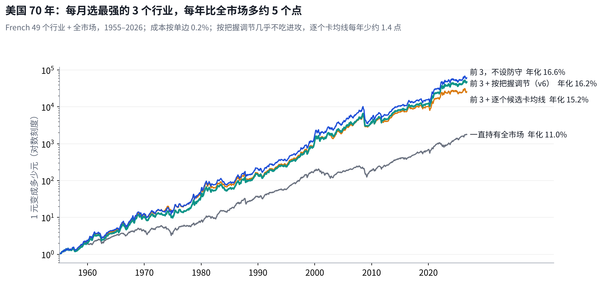

项目愿景 在动态周期内，从多类资产里选出 Top N 强势 ETF 轮动持有，获得超额收益、稳定跑赢被动基准，同时把回撤控制住。
结论
进攻是每个市场按过去一年的强弱选前 3；防守只在市场确认紧张时按把握减仓。
预计每年比基准多约 0.6 个点（范围 −2.3 到 +2.1），100 万在六种合成行情的中间情况里最差剩约 67 万。
需要你
✓ 不用操作
下一步是等 Grok 第六轮补齐美股候选、Reviewer 复算，然后决定是否起草 v6 预注册。
✓进度D38 预演第 10–41 行跑完；你定了美股 60%、每个市场选前 3、底线按中间情况判、溢价看偏离、三票等权（D40）。
| 名字 |
是什么 |
| 基准 |
沪深300 70% + 纳指100 15% + 标普500 15%，每月再平衡。所有“多或少几个点”都和它比。 |
| 名额 |
每个市场一个：A 股 40%、美股 60%。名额里的钱只在这个市场的候选之间分。 |
| 12−1 |
候选从 12 个月前到 1 个月前的涨幅（最近一个月不算），文献里用了几十年的默认值。 |
| 母指数 |
A 股是沪深300，美股是标普500。母指数也是候选，规则自己决定拿母指数还是细分。 |
| 确认紧张 |
三票里至少两票成立：母指数跌破 10 个月均线；站上均线的候选占比处在历史低的三分之一；TRIN（成交额流向下跌候选的程度，10 日均值）处在历史高的三分之一。 |
| 把握 p |
这个市场以往紧张的月份里，领头者下个月仍然赚钱的把握，只用当时已经知道结果的月份算。紧张时股票仓位等于 p。 |
| 合成行情 |
电脑造的六种行情，每种生成 200 种可能的未来；里面没有动量，挑选只是噪声，是对挑选最不利的情况。 |
| 中间情况 |
200 种未来按最低点排好，排在正中间的那个，代表这类行情的典型结果。 |
| 较差的十分之一 |
从最差往上数第 20 个，代表十次这种行情里运气差的那一次。 |
| 打折 |
从历史数据算出来的超额一律乘 0.5；再按我们能买的候选个数（约 14 个，对 49 个行业）乘 0.6；成本按单边 0.2% 上限。 |
00策略怎么执行：每月最后一个交易日走四步，下一个交易日调仓
100 万分成 A 股 40 万、美股 60 万，各自走四步；平时每边拿 3 只、各占三分之一，市场确认紧张时股票只拿“把握 p”那么多，其余买国债。
- 打分选人选最强的 3 个比过去一年的涨幅（不算最近一个月），母指数也一起排。例：2015-08 A 股军工 106%软件 100%公用 95%→ 这 3 个入选
- 看市场两票以上 = 紧张母指数跌破均线、宽度低、TRIN 高，各算一票。例：2015-08 A 股均线 ✓宽度 ✓TRIN ✓→ 3 票，确认紧张
- 定仓位紧张时股票只拿 p平时每只占三分之一；紧张时股票按把握 p 打折，其余买国债。例：2015-08 A 股 40 万p = 0.30股票 12 万国债 28 万→ 只拿三成股票
- 买基金溢价冲高就换一只下一个交易日调仓，月中不动；溢价看它比自己 60 天常态高多少。例：纳指科技，假设常态 9%今天 16%高 7 个点→ 暂缓，换同指数另一只

- 读这张图：2015 年 8 月股灾后，A 股三票全中，以往紧张时 A 股领头者也跟着跌，把握只有 0.30，40 万里只拿 12 万股票；美股也算紧张，但美股领头者以往紧张时照样涨，把握 1.00，照常满仓。
- 一条附加规则：母指数跌破均线时，只选过去一年是涨的候选，选不满的空位也放国债。
- 待补规则：2013 年 4 月 A 股前两名“300 医药”和“全指医药”是同一个行业，三分之二押在医药上。起草前要加去重：同一行业只留分数高的那个。
| 执行标准 |
怎么算 |
用在哪一步 |
数字从哪来 |
| 12−1 涨幅 |
上月末点位 ÷ 12 个月前月末点位 − 1；全收益口径，美股按人民币 |
打分、选人 |
文献默认值 |
| 10 个月均线 |
最近 10 个月末点位的平均（含本月末） |
母指数、国债是否跌破 |
文献默认值 |
| 宽度 |
站上自己均线的候选数 ÷ 有 10 个月数据的候选数 |
第二票 |
门槛 = 到当时为止全部月份的 1/3 分位 |
| TRIN（10 日均值） |
每天：（涨的候选数 ÷ 跌的候选数）÷（涨的成交额 ÷ 跌的成交额），取最近 10 天平均 |
第三票 |
门槛 = 到当时为止的 2/3 分位 |
| 确认紧张 |
三票里至少两票 |
定仓位 |
等权投票，事先写死 |
| 把握 p |
以往每个紧张月记下“当时前 3 名下个月的平均涨幅”；p = Φ(平均 ÷ 标准差 × √月数) |
定仓位 |
只用已知结果；不足 12 个月份时 p = 0.5 |
| 候选准入 |
指数官方发布日（或基金上市日）起满 12 个月 |
打分 |
D38 第 39 行教训 |
| 溢价偏离 |
当日溢价 − 最近 60 个交易日溢价的中位数 |
买基金 |
执行层规则，不计入 3 个数字 |
| 成本 |
回测按单边 0.2% 计 |
全部 |
上限口径 |
- 把握 p 怎么读：t = 平均 ÷ 标准差 × √月数，越大越有把握。t = 0 时 p = 0.5，t = 1 时 0.84，t = 2 时 0.98。
- 美股候选：设计期回测用美国本土的行业 ETF 加纳指、道指、费城半导体、纳斯达克生物科技代替；v6 实盘用对应的 QDII，清单等 Grok 第六轮补齐后定。
| 示例：2015 年 8 月 31 日（A 股刚经历股灾） |
A 股名额（40 万） |
美股名额（60 万） |
| ① 打分前 3 |
中证军工 106%、全指软件 100%、全指公用 95% |
纳斯达克生物科技 37%、医疗 19%、可选消费 16% |
| ② 母指数和均线 |
沪深300 低于均线约 12%：只选分数为正的，前 3 都为正 |
标普500 低于均线约 0.7%：同左 |
| ② 三票 |
均线 ✓；宽度 0.00（门槛 0.35）✓；TRIN 1.29（门槛 1.22）✓：3 票 |
均线 ✓；宽度 0.43（门槛 0.62）✓；TRIN 1.25（门槛 1.92）✗：2 票 |
| ④ 把握 p |
0.30（之前 38 个紧张月，领头者表现差） |
1.00（含美国长历史 156 个紧张月） |
| ④ 股票仓位 |
40 万 × 0.30 = 12 万，每只 4 万 |
60 万 × 1.00 = 60 万，每只 20 万 |
| ④ 其余 |
28 万买 10 年国债（国债在均线上方） |
0 |
| 示例：2013 年 4 月 26 日（平静月份） |
A 股名额（40 万） |
美股名额（60 万） |
| ① 打分前 3 |
沪深300医药卫生 37%、全指医药 34%、创业板 20% |
纳斯达克生物科技 27%、医疗 22%、金融 17% |
| ② 三票 |
母指数在均线上方；宽度 0.74；TRIN 历史不足 24 个月不投票：0 票 |
0 票 |
| ④ 仓位 |
每只 13.3 万，股票 40 万 |
每只 20 万，股票 60 万 |
- 脚本：
scripts/preflight/exec_example.py
- 结果：
results/v6-preflight/exec-example.json
01预测表：每年比基准多约 0.6 个点，唯一的超额来源是美股名额的挑选
美股名额挑选打折后每年约 +1.0；A 股名额证据不足记 0；防守的平时保费约 −0.4；合计约 +0.6。

| 来源 |
中间值 |
范围 |
怎么算的 |
把握 |
| 美股名额挑选（前 3） |
+1.0 |
+0.3 到 +1.5 |
美国 70 年前 3 每年比全市场多 5.6，打五折，再按候选个数打六折，乘美股 60% |
中 |
| A 股名额挑选（前 3） |
0 |
−1.0 到 +1.0 |
按发布日校正后，2011–2015 年 A 股挑选跑输沪深300；证据太薄，记 0 |
低 |
| 防守的平时保费 |
−0.4 |
−1.6 到 −0.4 |
美国 70 年按把握调节对不设防守少 0.4；合成慢牛（最不利）少 1.6 |
中 |
| 美股 60% 的仓位差 |
0 |
−3 到 +3 |
两地一样强时为 0；美股每年比 A 股强或弱 10 点，约 ±3 |
无法预测 |
| 合计（不含仓位差） |
+0.6 |
−2.3 到 +2.1 |
100 万十年约多 12 万 |
低到中 |
- 超额只有一个来源：美股名额的挑选。它背后有 70 年证据，但我们能买的候选比 49 个少，所以打了两次折。
- A 股名额靠前向数据：设计期能选的候选太少，既证明不了有效，也证明不了无效；把握 p 从 0.5 起，按实盘结果慢慢学。
- 真正的回报在大跌时：预期超额不大，主要换来的是回撤，100 万最差约剩 67 万，基准约 35–51 万。
02挑选有没有用：美国 70 年每月选最强的 3 个行业，每年比全市场多约 5 个点
前 3 名只有一半的月份跑赢平均，但跑赢时赢得多；只要抓到理论最大值的 5% 就够每年多 5 个点。

| 检验 |
结果 |
结论 |
| 前 3 扣成本后比平均，1927–1999 / 2000–2026 / 2016–2026 |
+5.5 / +4.8 / +4.8 点，每段都赢 |
成立 |
| 每月跑赢平均的比例 |
46%–56% |
赢靠幅度，不靠次数 |
| 抓到理论最大值的几成 |
约 5% |
用不着 80% |
| 候选 10 / 15 / 25 / 43 个（2000–2026，前 3） |
+1.0 / +1.7 / +2.4 / +2.9 点 |
候选越多越好 |
| 港股只有 4 个分类指数 |
所有挑选都跑输恒指 |
不成立候选太少 |
| A 股按发布日校正，2011–2015 |
前 2 年化 3.5%，沪深300 5.9% |
输 |
- 它预测的是延续，不是下个月：过去一年强的，平均来说接下来还会再强一些；具体哪个月谁第一，预测不了。
- 整体排序的准确度会骗人：美国行业的秩相关近十年只有 0.01，但前 3 名照样每年多 4.8 点。挑选层要量“前 N 比平均多多少”，不量整体排序（D38 第 20 行替换了尺子）。
- 候选个数是硬门槛：港股 4 个就失效；美股现在 14 个，等 Grok 第六轮补齐标普科技、标普生物、全球芯片等。
03防守放在哪：逐个候选卡均线会吃掉进攻，只在市场层面防守几乎不吃
市场越窄，领头的几个越赚钱（下个月年化 23%）；逐个卡均线正好在这些月份每年少约 4.5 点。

| 防守怎么放 |
年化 |
100 万最差剩 |
2016–2026 年化 |
结论 |
| 不设防守 |
16.6% |
34 万 |
17.5% |
收益最高、回撤最深 |
| 逐个候选卡均线 |
15.2% |
46 万 |
12.2% |
不采用吃进攻 |
| 按票直接砍股票仓位 |
11.9% |
70 万 |
3.5% |
不采用2022 年把能源领头者换成了国库券 |
| 按把握调节（v6） |
16.2% |
46 万 |
17.4% |
采用 |
| 一直持有全市场 |
11.0% |
50 万 |
14.8% |
参照 |
- 根因：市场信号预测的是母指数的风险，而组合拿的是领头者。紧张时领头者跟不跟着跌，因市场而异。
- 美国：紧张时领头者平均仍在涨（年化 +15%，t = 2.5），把握接近 1，几乎不减仓。
- A 股：按发布日校正前后结论翻转，把握从 0.5 起学；2008 年那种崩盘里会很快降下来。
04市场信息怎么用：宽度、TRIN 预测的是风险，不是方向
宽度低时下个月大跌的概率是 18%，宽度高时 5%；TRIN 和宽度几乎不相关，是两个独立的“传感器”。
| 指标 |
样本 |
下个月母指数跌超 5% 的概率 |
和宽度的相关 |
结论 |
| 宽度（站上均线的候选占比） |
美国 49 行业 1927–2026 |
低档 18%，高档 5% |
— |
成立 |
| TRIN 10 日均值 |
A 股 2006–2015（临时） |
高档 40%，低档 13% |
−0.17 |
成立 |
| TRIN 月度原值 |
美股 1999–2015 |
高档 19%，低档 5% |
0.05 |
成立 |
| 上涨日成交额占比 |
两地 |
— |
0.66–0.82 |
和宽度重复，不采用 |
| 成交额热度 |
A 股 |
方向不稳 |
— |
待定 |
- 单独当开关会出错：TRIN 当“一票否决”时，2008 年熊市中段的反弹月漏掉了防守，最差剩 53 万（D38 第 31 行），只说明这种用法不行。
- 三票合起来、按把握调节：两票以上才算紧张；紧张时减多少，由这个市场过去的经验决定。
05六种合成行情：慢牛保费 1.6 个点，中间情况都守住 60 万
慢牛每年落后基准约 1.6 点，低于你定的 4 点上限；最低剩的中间情况 67–85 万，较差的十分之一在急跌（58.8）、震荡（59.9）略低于 60 万。

| 行情 |
新系统最低剩：中间 / 较差十分之一 |
基准 |
上一版（增强基准） |
新系统每年比基准 |
结论 |
| 慢牛 |
85.1 / 77.3 |
85.5 / 75.4 |
88.3 / 84.3 |
−1.6 |
通过 |
| 震荡 |
73.5 / 59.9 |
70.9 / 53.8 |
79.2 / 69.1 |
−0.1 |
通过 |
| 市场接力 |
79.6 / 69.4 |
78.6 / 64.3 |
84.2 / 77.0 |
−1.3 |
通过 |
| 急跌（20 天 −30%） |
66.8 / 58.8 |
61.0 / 49.4 |
69.7 / 62.5 |
+3.0 |
通过 |
| 慢熊（18 个月 −45%） |
69.8 / 60.8 |
51.2 / 35.7 |
68.8 / 58.0 |
+15.8 |
通过 |
| V 型反转 |
70.7 / 61.1 |
69.0 / 58.1 |
76.0 / 67.9 |
−14.8 |
通过 |
- 按中间情况判，六种都过：和 D39 判 K2A 时的口径一致（你定：100 万跌到 58 万时不会卖）。
- 较差的十分之一写进疼痛表：急跌是 20 天跌 30%，每月看一次的防守来不及，最低点取决于当时拿了多少股票。
- V 型反转最贵：紧张时减了仓，反弹时回来得晚，这一段每年落后约 15 点（短期年化）。
06设计期和美股 60%：A 股证据薄，钱多放在证据强的一边
按发布日校正后，2006–2011 年 A 股能选的候选只有 1–6 个；美股大跌时 A 股平均跌得更深（−23.6%）。
| 方案（2006–2015，单边 0.2%） |
年化 |
100 万最差剩 |
2006–10 |
2011–15 |
结论 |
| 新系统，前 3，美股 60% |
12.6% |
71.1 万 |
13.3% |
12.0% |
采用 |
| 新系统，前 2，美股 60% |
15.5% |
68.8 万 |
18.6% |
12.4% |
不采用 |
| 基准 |
15.8% |
34.7 万 |
22.4% |
9.5% |
参照 |
| 上一版（增强基准） |
13.8% |
64.2 万 |
18.0% |
9.7% |
参照 |
| 你的判断（2005–2015，人民币，按季度） |
数据 |
结论 |
| 美股好时，A 股不一定好 |
美股涨的季度里 A 股涨 64% |
成立 |
| A 股好时，美股基本都好 |
A 股涨的季度里美股涨 75% |
成立 |
| 美股不好时，A 股几乎也不好 |
美股跌的季度里 A 股跌 62%；美股单季跌超 10% 的 3 次，A 股平均 −23.6% |
大跌时成立 |
- 设计期前 3 比前 2 少约 3 点，主要是数据不足：2006–2010 年 A 股候选不够 3 个，空位放了国债；2011–2015 年两者几乎一样。
- 设计期不是裁判：它包含 2006–07、2014–15 两次 A 股大牛市，美股 60% 在这种年代注定落后基准。
- 教训变成了检查：设计评审第 8 问加了“每个候选只从官方发布日起参选，设计期也一样”。
07溢价规则：看比自己常态高多少，不看绝对水平
溢价比自己 60 天常态高 10 个点以上时，下个月平均回落 10 个点、七成回落超 5 个点；在常态附近只有 1%。
| 溢价比自身常态 |
天数 |
下个月溢价平均变化 |
下个月跌超 5 个点的概率 |
结论 |
| 低 2 个点以上 |
2,997 |
+1.5 |
2% |
能买 |
| 常态 ±2 个点 |
22,894 |
+0.3 |
1% |
能买 |
| 高 2–5 个点 |
3,473 |
−1.4 |
10% |
能买 |
| 高 5–10 个点 |
910 |
−2.8 |
29% |
暂缓 |
| 高 10 个点以上 |
176 |
−10.0 |
70% |
不买 |
- 怎么算：每天算“场内价格 ÷ 净值 − 1”；取最近 60 个交易日的中位数当常态；今天减常态就是偏离。偏离超过 5 个点不买，已持有的不受影响。
- 纳指科技这类稀缺品种可以买：常态溢价约 9%，全部交易日里下个月溢价跌超 5 个点的比例约 10%；但额度放开时可能一次性消失，所以单只设仓位上限。
- 最强的时候溢价也最高：被挡住时先找跟踪同一指数、偏离小的基金；没有就给下一名候选或母指数。
08疼痛表：这些情况会发生，事先接受
最难受的是 A 股大牛市（每年少约 9 点）和 V 型反弹（短期每年落后约 15 点）；这是押“美股是锚”和“先求不输”的代价，不是规则出错。
| 情形 |
会发生什么 |
量级 |
结论 |
| A 股大牛市（2006–07、2014–15 那种） |
基准 70% 在 A 股，我们只有 40% |
2006–2010 每年少约 9 点 |
要警惕 |
| V 型急跌急涨 |
紧张时减了仓，反弹时回来得晚 |
合成 V 型每年落后约 15 点（短期年化） |
要警惕 |
| 突发急跌 |
每月看一次来不及 |
较差的十分之一约剩 58.8 万 |
已接受 |
| 挑选没有动量的年份 |
前 3 只是噪声，多付换手 |
每年少约 1.6 点 |
已接受 |
| 稀缺 QDII 溢价整体消失 |
额度放开时一次性损失 |
纳指科技常态溢价约 9% |
已接受 |
| 试了很多种防守 |
设计期挑出来的最好结果有挑选偏差 |
已按打折处理，前向再对账 |
已接受 |
09已经定了什么：进攻、防守、美股比例、溢价都定了（D40）
进攻、防守、美股比例、溢价、合同边界都定了；底线 60 万和保费 4 点两条线继续有效。
| 编号 |
决定 |
结论 |
| D40-1 |
每个市场按 12−1 选前 N，母指数也是候选；候选从官方发布日起、满 12 个月才参选 |
采用 |
| D40-2 |
防守不再逐个卡均线：母指数跌破均线时入选者须过去一年是涨的；确认紧张时股票仓位 = 把握 p |
采用 |
| D40-3 |
把握 p = Φ(t)，只用已知结果；美股以美国长历史为起点，A 股从 0.5 起 |
采用 |
| D40-4 |
美股 60%、A 股 40%；港股不单设名额 |
采用 |
| D40-5 |
溢价看偏离：比自身 60 天常态高 5 个点以上不买；稀缺品种设单只上限 |
采用 |
| D40-6 |
替代 D39 的 K2A；D39 的底线 60 万、保费 4 点继续有效 |
采用 |
| D40-7 |
每个名额选前 3；合成行情的底线按中间情况判；三票等权写进合同边界（PR #315） |
采用 |
10接下来：补齐美股候选、复算，然后决定是否起草
还差三件事：Grok 第六轮的 36 条美股、港股指数；Reviewer 复算第 20–41 行；A 股前向数据。
| 事项 |
谁 |
现在 |
状态 |
| 补齐美股候选（标普科技、标普生物、全球芯片、标普油气、标普消费等 36 条指数），重算美股名额 |
Grok、Dev |
Grok 第六轮在做 |
进行中 |
| 复算 D38 第 20–41 行，重点是 A 股发布日校正、把握 p 和合成行情 |
Reviewer |
等派单 |
待定 |
| 合入 PR #315（五问、等权投票的合同边界） |
Manager |
等合入 |
待定 |
| 决定是否起草 v6 预注册；预注册里单列执行层规则（溢价偏离、单只上限） |
你 |
上面三件有结果、预测表没有大偏差之后 |
待定 |
- 2.4 版的结构：底仓 70/15/15 + K2A（只给 A 股腿买保险：跌破 10 个月均线换国债，按波动降仓）。每年约少赚 1.6–2 个点，100 万最差剩 68 万（真实 2010–2013）。
- 为什么被替代：Owner 指出 90% 仓位固定在 3 个标的上偏离了愿景；之后的预演找到了 Top N 的长历史证据，并发现逐个卡均线会吃掉进攻（D38 第 20–38 行）。
- 仍然有效的部分：D39 的两条线（底线 60 万、保费 4 点）；K2A 作为“增强基准”，是 v6 要比的参照之一。
- 全文：2.4 版。